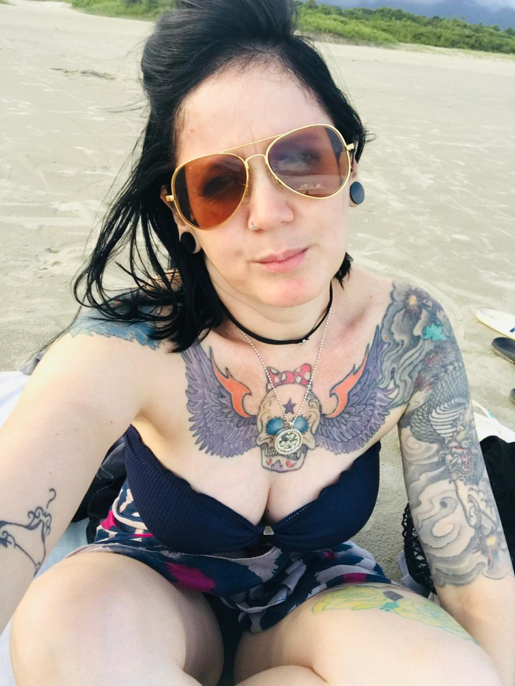

Uma super mãe, artista e empreendedora.

Alcione Mariotto é uma grande mulher. Mãe, artista e empreendedora, desempenha com perfeição
tudo aquilo em que pōe a mão.
Em 2020 iniciou um projeto/
empreendimento chamado "SIANG", que é uma mistura de ateliê com design de interiores,
realizando um grande sonho pessoal.